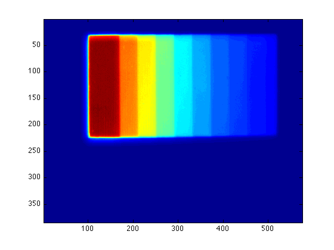
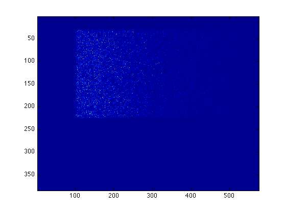
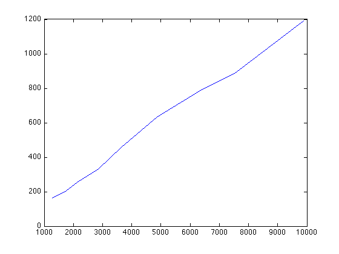
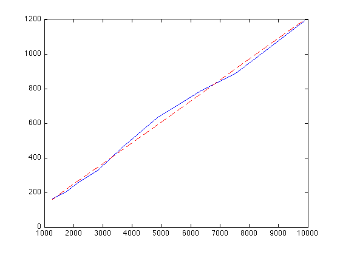

Means and Standard Deviations of Box Pixels
Now you need to choose one box from each step to calculate the variance and mean intensity for each box.
Suppose you have obtained the the average of the bias-corrected images sc and the variance image var:
figure(1) imagesc(sc) figure(2) imagesc(var) 
Then we invoke the procedure box_vals. When calling box_vals, you'll need to click and drag on the image to define a box. You should do so on sc (figure 1) instead of var (figure 2), since it's easier to see the edges of steps on sc.
The function box_vals requires two input, which is sc and var in this case:
box_vals(sc, var)
It will give you the following output:
mean intensity = 9879.664, std of intensity = 56.295 mean variance = 1189.840, std of variance = 1625.585
Now you can save the mean intensity (avm) and the variance (dfm) to the vectors xvec and yvec:
xvec(1) = 9879.664; yvec(1) = 1189.840;
Recall that xvec(1) means the first element of vector xvec, which corresponds to your first measurement, or data from the first step. Don't forget to change the number inside the parentheses when you are measuring the other steps!
Repeat this process for all 9 steps, and you'll be able to plot the variance vs. the mean intensity:
figure(3) plot(xvec, yvec)
The slope of this plot gives you the gain of your CCD. To calculate the slope, we can use the MATLAB function polyfit:
coef = polyfit(xvec, yvec, 1)
coef =
0.1206 5.8303
which will fit xvec and yvec into a polynomial of degree 1, yvec = a*xvec + b, where coef(1) is a and coef(2) is b.
You can also overplot the fitted formula on your measured data by using hold:
figure(3) hold on plot(xvec, coef(1)*xvec+coef(2), 'r--')
The third parameter defines the line property, and r-- here means red dashed line. The default line property is b- : blue straight line.